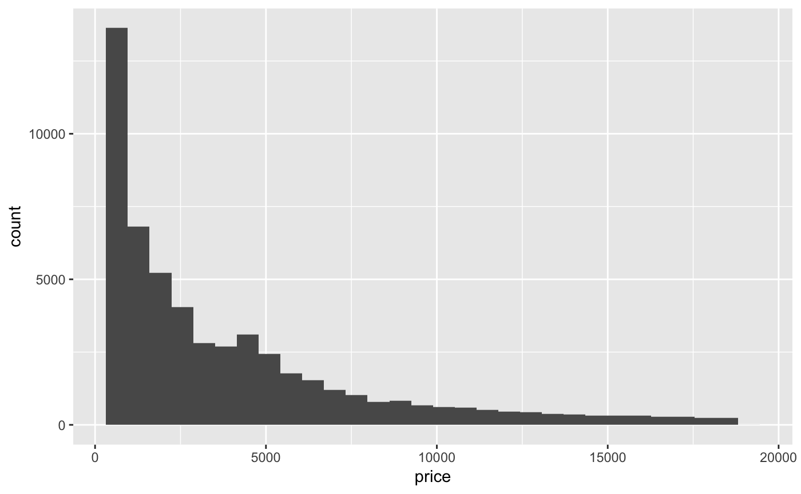
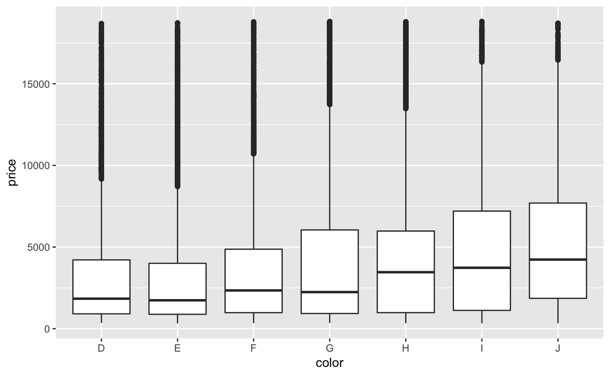
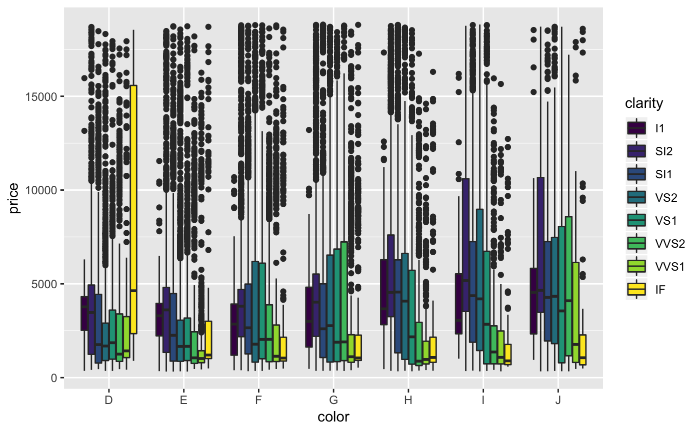
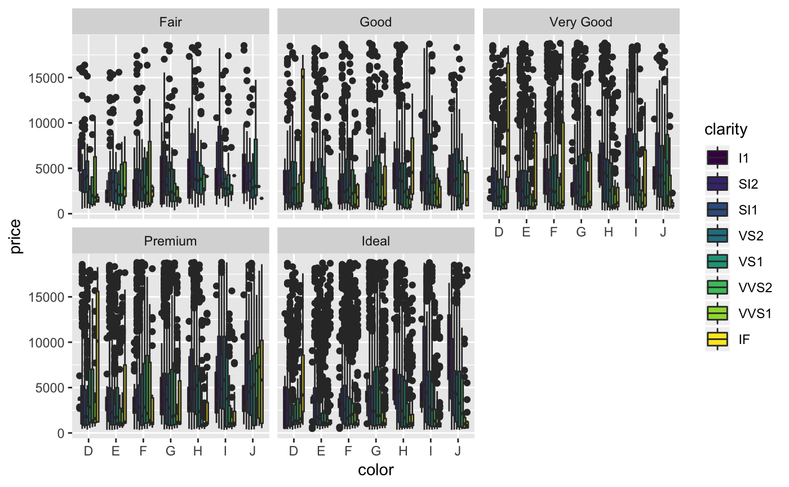
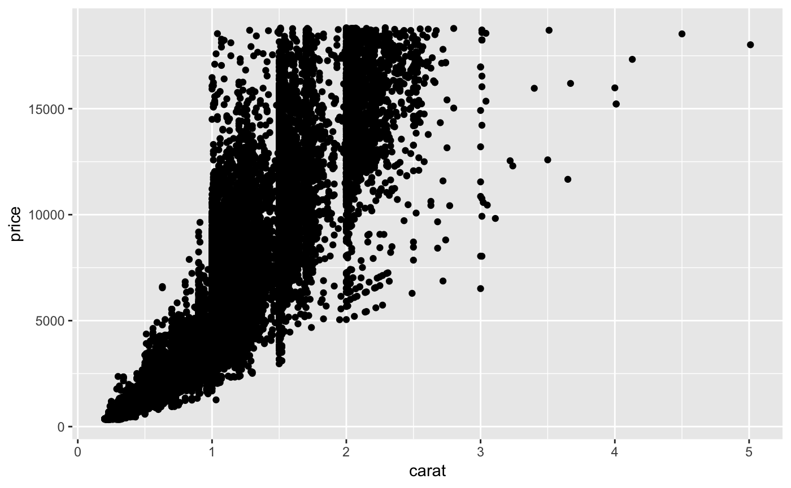
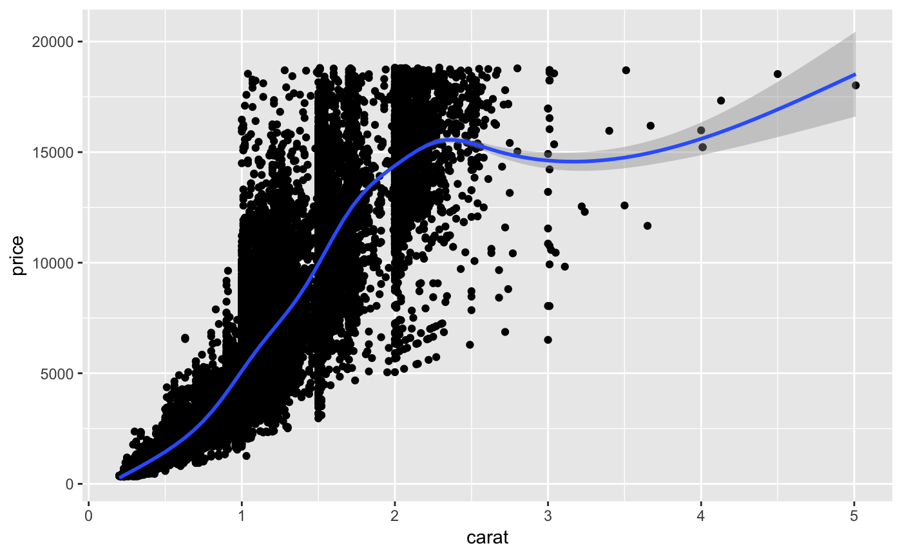
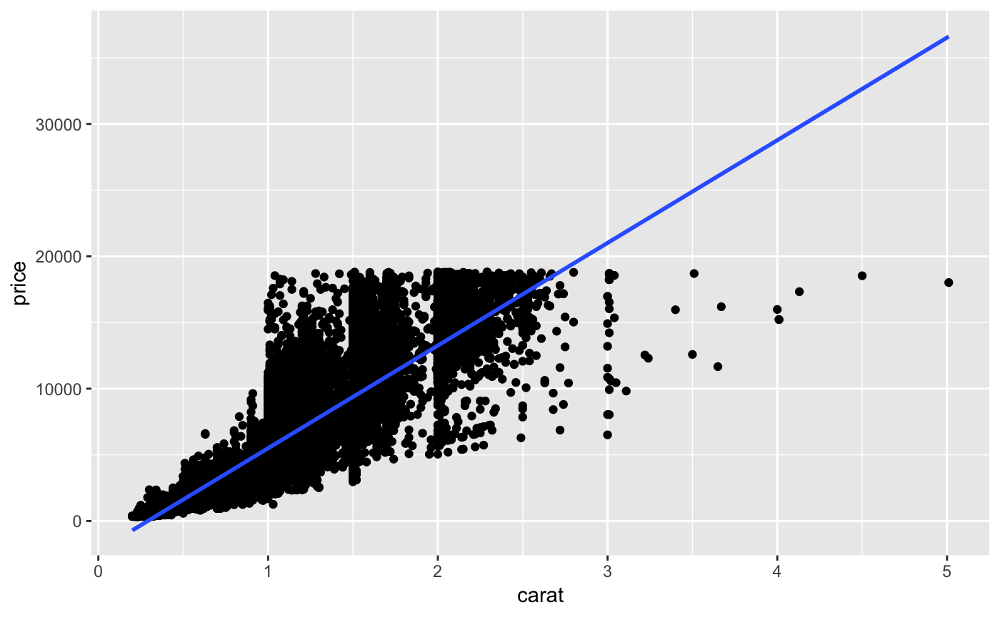
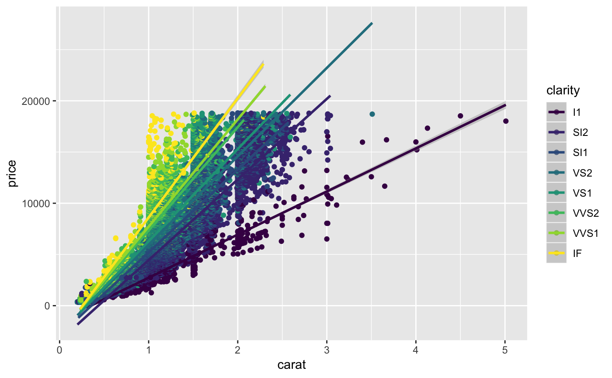

Basics of the Grammar of Graphics
Jerid Francom
2019-02-22
Source:vignettes/basics-of-the-grammar-of-graphics.Rmd
basics-of-the-grammar-of-graphics.RmdThe Grammar of Graphics
The Grammar of Graphics is built on three components -data, mappings, and geometries. The ggplot2 package incorporates this approach explicitly in creating graphics.
First we’ll load the packages we will need first.
library(tidyverse)
#> ── Attaching packages ───────────────────────────────────────────────────────────────────── tidyverse 1.2.1 ──
#> ✔ ggplot2 3.1.0 ✔ purrr 0.3.0
#> ✔ tibble 2.0.1 ✔ dplyr 0.7.8
#> ✔ tidyr 0.8.2 ✔ stringr 1.3.1
#> ✔ readr 1.3.1 ✔ forcats 0.3.0
#> Warning: package 'tibble' was built under R version 3.5.2
#> Warning: package 'purrr' was built under R version 3.5.2
#> ── Conflicts ──────────────────────────────────────────────────────────────────────── tidyverse_conflicts() ──
#> ✖ dplyr::filter() masks stats::filter()
#> ✖ dplyr::lag() masks stats::lag()Let’s take a built-in dataset, diamonds, and get an understanding what the data look like.
glimpse(diamonds)
#> Observations: 53,940
#> Variables: 10
#> $ carat <dbl> 0.23, 0.21, 0.23, 0.29, 0.31, 0.24, 0.24, 0.26, 0.22, 0.…
#> $ cut <ord> Ideal, Premium, Good, Premium, Good, Very Good, Very Goo…
#> $ color <ord> E, E, E, I, J, J, I, H, E, H, J, J, F, J, E, E, I, J, J,…
#> $ clarity <ord> SI2, SI1, VS1, VS2, SI2, VVS2, VVS1, SI1, VS2, VS1, SI1,…
#> $ depth <dbl> 61.5, 59.8, 56.9, 62.4, 63.3, 62.8, 62.3, 61.9, 65.1, 59…
#> $ table <dbl> 55, 61, 65, 58, 58, 57, 57, 55, 61, 61, 55, 56, 61, 54, …
#> $ price <int> 326, 326, 327, 334, 335, 336, 336, 337, 337, 338, 339, 3…
#> $ x <dbl> 3.95, 3.89, 4.05, 4.20, 4.34, 3.94, 3.95, 4.07, 3.87, 4.…
#> $ y <dbl> 3.98, 3.84, 4.07, 4.23, 4.35, 3.96, 3.98, 4.11, 3.78, 4.…
#> $ z <dbl> 2.43, 2.31, 2.31, 2.63, 2.75, 2.48, 2.47, 2.53, 2.49, 2.…We can also look at the data dictionary for this dataset using ?diamonds in the Console. The least transparent of the variables are the x, y, and z which in the data dictionary clarify that they refer to the length, width, and depth in mm.
We also see that we have some categorical variables cut and clarity as well as some continuous variables carat and price, for example.
Knowing the informational value of our variables is key to creating an appropriate visualization. In the Grammar of Graphics we are going to take some data, in this case diamonds, then map some variables to a variable space with the aes() function, and then decide how to display these variables in a geometric space with the set of geom_x functions. Let’s see an example. First we can set up the data.

At this point there is data, but no mappings nor geometries to be represented. Let’s add a mapping of the color variable to the x-axis and plot that as a bar plot.

Since this is a categorical variable, the y-axis is the count. We can augment this graphic by adding a fill aesthetic mapped to the cut variable.

We can also add a third categorical dimension to this plot with a facet. The facet_wrap() function can be added to the graphic represent a new plot for each level of the categorical variable.

Now let’s look at the continuous variable price. A histogram is a good way to visualize a single continuous variable.
p + geom_histogram(aes(x = price))
#> `stat_bin()` using `bins = 30`. Pick better value with `binwidth`.
If we would like to see a combination of a categorical and continuous variable, a box plot is a often a good choice.

A box plot, as you see, displays boxes for each of the grouping values in ‘color’. The boxes contain a lot of distributional information. Namely, we get a visual display of much of the information we get when we run ‘summary()’ on a continuous variable. Min and max values are marked with the vertical line, the top and bottom of the box correspond to the 1st and 3rd quantile, and the bold line is the median. Dots on the vertical line are marked as outliers. It’s a pretty powerful visualization!
We could also add a fill aesthetic to boxplots too, just as we did with bar plots earlier.

And we can add another categorical variable through faceting.

Another type of common visualization situation is when we want to compare to continuous variables. This is where the scatterplot comes in. Let’s compare the carat and the price. The geom_point() function will map points to the x and y values.

We can also add a trend line by adding another layer with the geom_smooth() function. But to do this we need to pass the same mappings to both the geom_point() and geom_smooth() geometries. We can do this redundantly for each geometry, or we can take a different approach to adding the data and aesthetic mappings than we have so far. The alternative is seen below.
diamonds %>% ggplot(aes(x = carat, y = price)) + geom_point() + geom_smooth()
#> `geom_smooth()` using method = 'gam' and formula 'y ~ s(x, bs = "cs")'
To add a linear trendline, we can add a specific method to the geom_smooth() function.

As you might imagine, we can add a color aesthetic to indicate those points that are of certain clarity. Note: after a %>% or + you can add a line break if you find that it helps make your code more legible.
diamonds %>%
ggplot(aes(x = carat, y = price, color = clarity)) +
geom_point() +
geom_smooth(method = "lm")
That’s a quick rundown of the basics of the Grammar of Graphics and the ggplot2 package. There is so much more ggplot2 can do and surely more that you want to know how to do. A good place to start is the Ggplot2 package website. I also recommend the “R Graphics Cookbook” by Winston Chang.